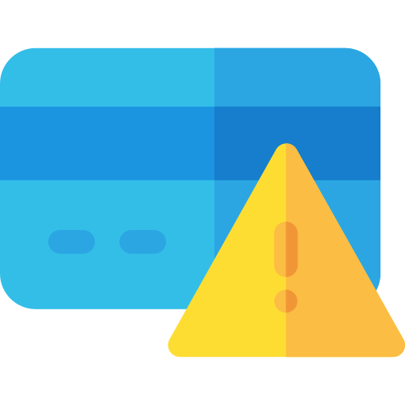

- Can be either software or hardware
- Sits between the user’s computer and an external network (e.g. internet) and filters information coming in and out of the user’s computer
Menu
CHAPTER 8.4: ADDITIONAL SECURITY OF DATA

Firewalls
- To examine the ‘traffic’ between a user’s computer (or internal network) and a public network (the internet as an example)
- Checks whether incoming or outgoing data meets a given set of criteria
- If the data fails the criteria, the firewall will block the traffic and give the user a warning that there may be a security issue
- The firewall can be used to log all incoming and outgoing traffic to allow later interrogation by the user
- Criteria can be set so that the firewall prevents access to certain undesirable sites; the firewall can keep a list of all undesirable IP addresses
- Help prevent viruses or hackers entering the user’s computer network
- Help prevent hackers from gaining access to the user’s computer or network
- By blocking IP addresses (But the hackers can still have access to a computer or network if they are using an allowed computer)
- Warn the user when some software on their system tries to access an external data source
- Gives the user options of allowing it to go ahead or request that such access is denied
- A firewall can be a hardware interface that is located somewhere between the computer and the internet connection
- Or can be software installed on a computer
- Certain circumstances where the firewall can’t prevent potential harmful traffic:
- Cannot prevent individuals, on internal networks, using their own modems to bypass the firewall
- Employee misconduct or carelessness cannot be controlled by firewalls
- Users on stand-alone computers can choose to disable the firewall, leaving their computer open to harmful traffic from the internet

Security Protocols
- A type of protocol that allows data to be sent and received securely over the internet
- When a user logs on to a website, SSL encrypts the data - only the user’s computer and the web server are able to make sense of what is being transmitted
- A user will know if SSL is being applied when they see HTTPS or the small padlock in the status bar at the top of the screen
- SSL certificates are small data files that digitally bind an encryption key to an organisation’s details
- When installed on a web server, it shows as the green padlock and the HTTPS protocol and ensures secure connections from a web server to a web browser
- Similar to SSL, but more recent
- A form of protocol that ensures the security and privacy of data between devices and users when communicating over the internet
- Essentially designed to provide encryption, authentication, and data integrity (maintaining the accuracy and the consistency of data) in a more effective way than its predecessor, SSL
- When a website and a user communicate over the internet, TLS is designed to prevent a third party hacking into this communication and causing problems with data security
- Formed of two layers:
- Record Protocol: part of the communication that can be used with or without encryption (contains the data being transferred over the internet
- Handshake Protocol: permits the website and the user to authenticate each other and to make use of encryption algorithms (a secure session between user and website is established)
- Formed of two layers:
- Only recent web browsers support both SSL and TLS (a reason why older SSL is used in many cases)
- Possible to extend TLS by adding new authentication methods
- TLS can make use of session caching, which improves the overall performance compared to SSL
- TLS separates the handshaking process from the record protocol (layer), which holds the data
- When opening a TLS session, it requires a lot of computer time due to the complex encryption keys being used
- The user of session caching can avoid the need to utilise so much computer time for each connection
- TLS can establish a new session or attempt to resume an existing session; using the latter can boost system performance considerably
Cach is a collection of processed data that is kept on hand and reused in order to avoid costly repeated database queries

Encryption
- Used primarily to protect data in case it has been hacked or accessed illegally
- Won’t prevent hacking, but makes the data meaningless unless the recipient has the necessary decryption tools
- It uses a secret key that has the capability of altering the characters in a message
- If this key is applied to a message, its content is changed, which then makes it unreadable unless the recipient also has the same secret key
- The key used to encrypt the message is known as the encryption key, the key used to decrypt the message is known as the decryption key
- When a message undergoes encryption, it becomes cypher script
- The original message is known as plain text


Authentication
- Used to verify that data comes from a secure and trusted source
- Works with encryption to strengthen internet security
- A pair of files stored on a user’s computer - used in the security of data sent over the internet
- Each pair of files is divided into:
- A public key (known by anyone)
- A private key (known to the computer user only)
- When sending an email, the original message is known as plain text
- Message is made more secure by attaching a digital certificate
- When the message is received, the recipient can verify that it comes from a known or trusted source by viewing the public key information
- An added level of security to protect the recipient from harmful emails
- Digital certificate is made up of six parts:
- Sender’s email address
- The name of the digital certificate owner
- A serial number
- Expiry date (the date range during which the certificate is valid)
- Public key (used for encrypting messages and for digital signatures)
- Digital signature of a certificate authority (CA)
- Should be the combination of letters and numbers
- Strong passwords should contain:
- Upper case
- Lower case
- Numbers
- Keyboard symbols
- The user is only allowed to type password a certain number of times before the system locks the user out
- The user will be unable to log on until the system administrator has reset their password
- Password should be changed on a regular basis in case they become known to another user or a hacker
- It is important to prevent other people from gaining access to password by way of spyware or viruses
- Relies on certain unique characteristics of human beings:
- Fingerprint scans
- Signature recognition
- Retina scans
- Iris recognition
- Face recognition
- Voice recognition
- Used in a number of applications as a security device
Fingerprint Scans
- Images of fingerprints are compared against previously scanned fingerprints stored in a database; if they match then access is allowed
- The system compares patterns of ‘ridges’ and ‘valleys’, which are fairly unique
Signature Recognition
Example of behavioral biometrics that identifies a person based on their handwriting
- There are two different ways in which it operates:
- Static:
- Users write their signature on paper
- After signing, it is digitalised through an optical scanner or a camera to turn the signature image into bits
- The biometric system recognises the signature and analyzing its shape
- Dynamic:
- Users write their signature on digitising tablet
- Static:
Retina Scans
- Use infrared light to scan the unique pattern of blood vessels in the retina
- Requires a person to sit for 10 to 15 seconds while the scan takes place
- Secure as nobody has found a way to duplicate blood vessels patterns
Iris Recognition
- Process of using visible and near-infrared light to take a high-contrast photograph of a person’s iris
- A form of biometric technology in the same category as face recognition and fingerprinting
Face Recognition
- A way of recognising a human face through technology
- Uses biometrics to map facial features from a photograph or videos and compares the information with a database of known faces to find a match
Voice Recognition
- Process of converting a voice into digital data
- Works by scanning the speech and establishing a match with the desired voice fingerprint
Comparison of six common biometric techniques
| Biometic Technique | Comparative Accuracy | Comparative cost | Devices Needed | Social Acceptability | What can interfere with the procedure |
|---|---|---|---|---|---|
| Fingerprint Scans | High Accuracy | Medium | Scanner | Medium | Damaged fingers |
| Signature Recognition | Low Accuracy | Medium | Optical Pen | High | Signatures can change with time |
| Retina Scans | Low Accuracy | High | Digital Camera | Low | Irritation of eye |
| Iris Recognition | High Accuracy | High | Digital Camera | Low | Wearing of glasses |
| Face Recognition | Medium - low Accuracy | Medium | Digital Camera | High | Facial mask or glasses |
| Voice Recognition | Medium Accuracy | Medium | Microphone | High | Background noise or person has a cold |
Comparison of the Pros and Cons of the Six Common Biometric Techniques
| Biometic Technique | Pros | Cons |
|---|---|---|
| Fingerprint Scans |
|
|
| Signature Recognition |
|
|
| Retina Scans |
|
|
| Iris Recognition |
|
|
| Face Recognition |
|
|
| Voice Recognition |
|
|

Online Credit Fraud
- Hackers gaining access to a user’s computer through the use of spyware, phishing, or pharming
- The user can be tricked into giving personal and financial details that enable the hacker to gain full access to a user’s account
- Can lead to unauthorised purchases or removal of money
- Breaking of passwords through techniques
- Weak passwords
- No encryption used
- Better to type a web address or URL rather than copy and paste since a web address or URL can be altered very slightly in the email and the user might end up visiting a fake website
- Not setting up a password when using wireless technology
- Easy to tap into wireless networks without password protection
- Logging into an account or website in a public place
- Always a risk that somebody is monitoring internet usage in the area and try to tap into the data
- Always use varied and complex passwords
- Check the accuracy of bank accounts continually
- Only provide personal info on sites that have ‘https’ in the web address or have a padlock icon in the web browser
- Don’t provide personal information to any unsolicited requests for info
- Don’t open emails or attachments from unknown senders
- Delete any messages from your spam folder on a regular basis
- Report any suspicious phishing activity to the company that is used by the perpetrator
- Only download software from sites that can be trusted

Cloud Security
- Don’t need to carry memory sticks around when you want to access your files away from home
- Don’t have to pay for large storage capacity on electronic devices
- Because the cloud is controlled by external companies, they will ensure that your files are backed up and therefore reduce the possibility of losing irreplaceable data
- The ability to synchronise files sure they are automatically updated across all devices
- Ideal for collaboration purposes; allows several users to edit and collaborate on a single file or document
- Companies that transfer vast amounts of confidential data from their own systems to a cloud service provider are effectively relinquishing control of their own data security, raising a number of questions:
- What physical security exists regarding the building where the data is housed?
- How good is the cloud service provider’s resistance to natural disasters or power cuts?
- What safeguards exist regarding personnel who work for the cloud service company? Can they use their authorisation codes to access confidential data for monetary purposes?
- There is a risk that important and irreplaceable data could be lost from cloud storage facilities
- Actions from hackers could lead to loss or corruption of data
- Users need to be certain sufficient safeguards exist to overcome these potentially very harmful risks